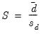

|
|
|
Evaluation of the quality of a forecast requires comparing the forecast values to actual values of the target value over a forecast period. A standard procedure is to set aside some history of your actual data for use as a comparison sample in which you will compare of the true and forecasted values.


 as
as  and
and  , respectively. The forecast evaluation measures are defined as:
, respectively. The forecast evaluation measures are defined as:

 is either a squared or absolute difference between the forecast and the actual,
is either a squared or absolute difference between the forecast and the actual, . (Note that while Diebold and Mariano define an
. (Note that while Diebold and Mariano define an  -step statistic, EViews only computes the one-step version.)
-step statistic, EViews only computes the one-step version.) degrees of freedom.
degrees of freedom.